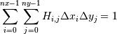
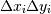

numpy.histogram2d¶
- numpy.histogram2d(x, y, bins=10, range=None, normed=False, weights=None)[source]¶
Compute the bi-dimensional histogram of two data samples.
Parameters : x : array_like, shape (N,)
An array containing the x coordinates of the points to be histogrammed.
- y : array_like, shape (N,)
An array containing the y coordinates of the points to be histogrammed.
- bins : int or [int, int] or array_like or [array, array], optional
The bin specification:
- If int, the number of bins for the two dimensions (nx=ny=bins).
- If [int, int], the number of bins in each dimension (nx, ny = bins).
- If array_like, the bin edges for the two dimensions (x_edges=y_edges=bins).
- If [array, array], the bin edges in each dimension (x_edges, y_edges = bins).
- range : array_like, shape(2,2), optional
The leftmost and rightmost edges of the bins along each dimension (if not specified explicitly in the bins parameters): [[xmin, xmax], [ymin, ymax]]. All values outside of this range will be considered outliers and not tallied in the histogram.
- normed : bool, optional
If False, returns the number of samples in each bin. If True, returns the bin density, i.e. the bin count divided by the bin area.
- weights : array_like, shape(N,), optional
An array of values w_i weighing each sample (x_i, y_i). Weights are normalized to 1 if normed is True. If normed is False, the values of the returned histogram are equal to the sum of the weights belonging to the samples falling into each bin.
Returns : H : ndarray, shape(nx, ny)
The bi-dimensional histogram of samples x and y. Values in x are histogrammed along the first dimension and values in y are histogrammed along the second dimension.
- xedges : ndarray, shape(nx,)
The bin edges along the first dimension.
- yedges : ndarray, shape(ny,)
The bin edges along the second dimension.
See also
- histogram
- 1D histogram
- histogramdd
- Multidimensional histogram
Notes
When normed is True, then the returned histogram is the sample density, defined such that:

where H is the histogram array and  the area of bin {i,j}.
Please note that the histogram does not follow the Cartesian convention where x values are on the abcissa and y values on the ordinate axis. Rather, x is histogrammed along the first dimension of the array (vertical), and y along the second dimension of the array (horizontal). This ensures compatibility with histogramdd.
Examples
>>> import matplotlib as mpl >>> import matplotlib.pyplot as plt
Construct a 2D-histogram with variable bin width. First define the bin edges:
>>> xedges = [0, 1, 1.5, 3, 5] >>> yedges = [0, 2, 3, 4, 6]
Next we create a histogram H with random bin content:
>>> x = np.random.normal(3, 1, 100) >>> y = np.random.normal(1, 1, 100) >>> H, xedges, yedges = np.histogram2d(y, x, bins=(xedges, yedges))
Or we fill the histogram H with a determined bin content:
>>> H = np.ones((4, 4)).cumsum().reshape(4, 4) >>> print H[::-1] # This shows the bin content in the order as plotted [[ 13. 14. 15. 16.] [ 9. 10. 11. 12.] [ 5. 6. 7. 8.] [ 1. 2. 3. 4.]]
Imshow can only do an equidistant representation of bins:
>>> fig = plt.figure(figsize=(7, 3)) >>> ax = fig.add_subplot(131) >>> ax.set_title('imshow:
- equidistant’)
>>> im = plt.imshow(H, interpolation='nearest', origin='low', extent=[xedges[0], xedges[-1], yedges[0], yedges[-1]])
pcolormesh can displaying exact bin edges:
>>> ax = fig.add_subplot(132) >>> ax.set_title('pcolormesh:
- exact bin edges’)
>>> X, Y = np.meshgrid(xedges, yedges) >>> ax.pcolormesh(X, Y, H) >>> ax.set_aspect('equal')
NonUniformImage displays exact bin edges with interpolation:
>>> ax = fig.add_subplot(133) >>> ax.set_title('NonUniformImage:
- interpolated’)
>>> im = mpl.image.NonUniformImage(ax, interpolation='bilinear') >>> xcenters = xedges[:-1] + 0.5 * (xedges[1:] - xedges[:-1]) >>> ycenters = yedges[:-1] + 0.5 * (yedges[1:] - yedges[:-1]) >>> im.set_data(xcenters, ycenters, H) >>> ax.images.append(im) >>> ax.set_xlim(xedges[0], xedges[-1]) >>> ax.set_ylim(yedges[0], yedges[-1]) >>> ax.set_aspect('equal') >>> plt.show()